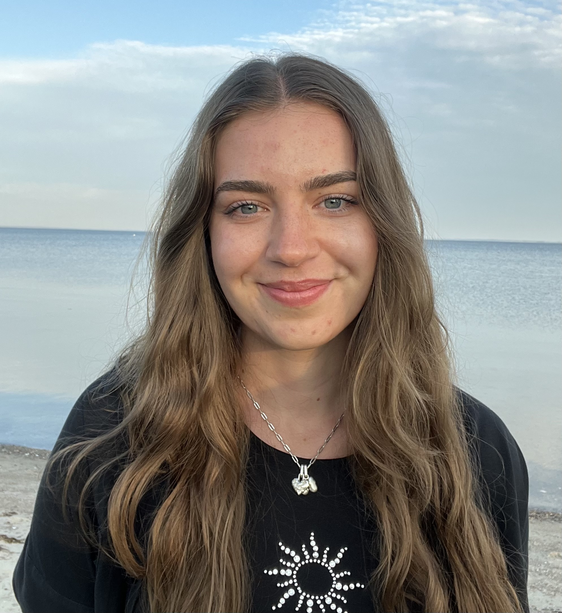

Du er ikke alene
Denne side er til dig der kæmper med mentale udfordringer, er pårørende eller nysgerrig. Jeg har samlet alt der har hjulpet mig igennem tiden, som jeg håber du også kan få glæde af. Mest af alt handler denne side om at vide at man ikke er alene - at der er mange andre der har det på præcis samme måde som en selv, vi er bare virkelig dårlige til at snakke om det. Lad dette være min håndsrækning til dig der har det svært.

Seneste indlæg

Hvad er mental sundhed?
Dette blogindlæg handler om hvad mental sundhed egentlig er og om hvordan kommer man igennem de svære perioder, samt anbefalinger til forskelligt materiale.
Læs mere på dette link.Om mig

Jeg hedder Mie og er 25 år gammel. Jeg har selv haft psykiske udfordringer i størstedelen af mit liv. Jeg har lavet denne blog for at samle alle informationer og hjælp som jeg selv har manglet, da jeg havde store mentale udfordringer. De går ikke nødvendigvis væk, men man kan lære at håndtere svære udfordinger. Og vigtigst af alt skal du huske at det hele nok skal gå.